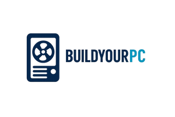
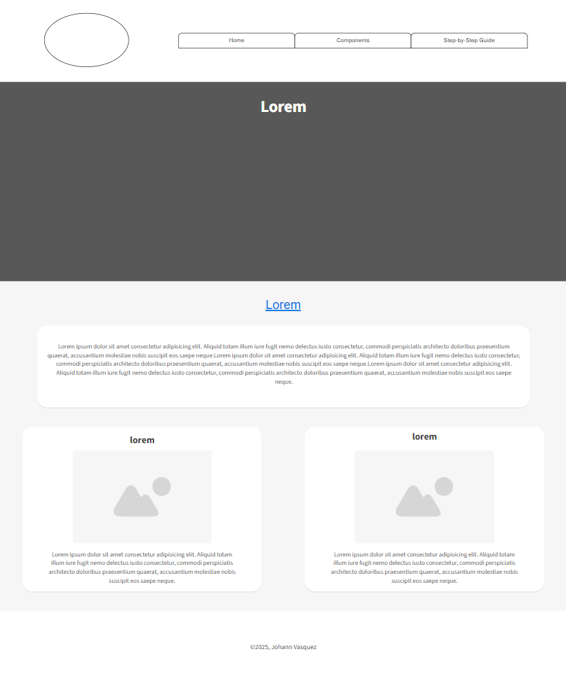
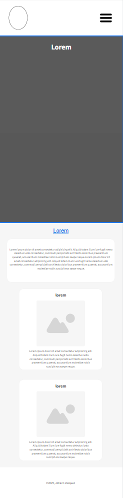

Site Name
Name: BuildYourPC101
Reasoning: This name clearly represents the website’s purpose — to guide beginners through the process of computer assembly and help them understand each component.

Site Purpose
This website provides a beginner-friendly guide to computer assembly. It covers essential hardware components, step-by-step assembly instructions, and tips for choosing compatible parts.
Scenarios
Visitors might come to the site with these questions:
What components do I need to build a PC?
How do I safely install all my PC parts?
It's safe to use a Generic PSU?
Color Schema
Primary-color (dark navy/charcoal): #1E1E2F; Header, nav, footer
Secondary-color (light gray): #EAEAEA; Section background
Accent-color (teal green): #00B894; Buttons, highlights
Text-light (white): #FFFFFF; Text on dark background
Text-dark (dark gray): #222222; Text on light background
Typography
Headings: Montserrat
Body Text: Roboto

